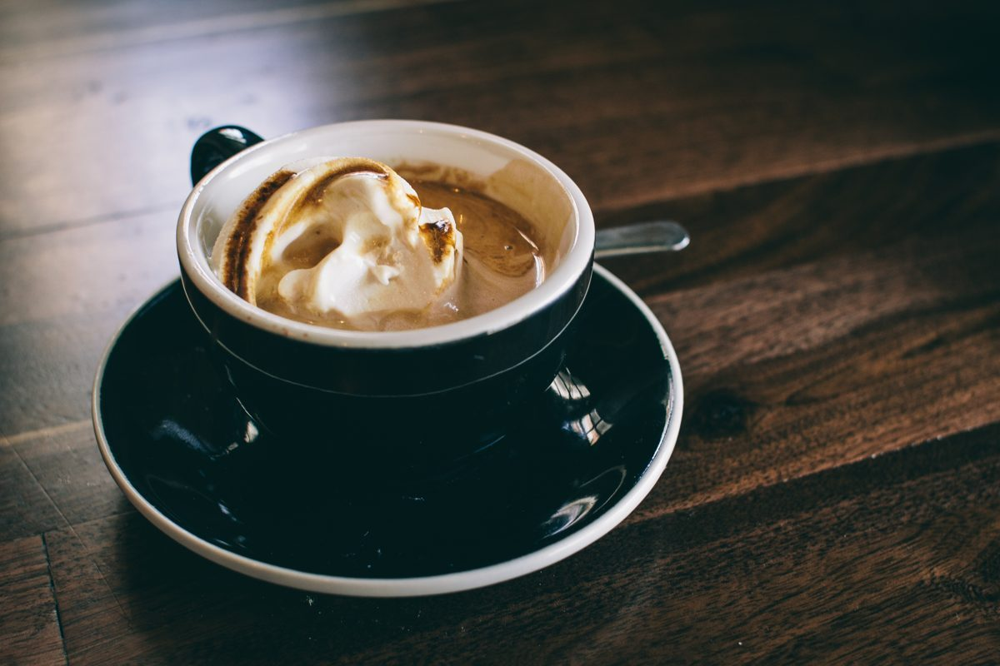

制作側の連想
ワインセラーの部位を、配置図にしてみる
このサイトは、家庭用のワインセラー(温度を保つ保管庫)を正面から見た図にしたつもりで作りました。六つの部位に番号をふり、上の図と並べています。制作側の連想で、お店の理念・由来とは無関係です。実際の製品の仕様を示すものでもありません。
凡例
六つの部位
- 1ガラス扉前面をおおう扉。外から中身が見えるように、ガラスをはめ込んだ部分。
- 2棚板内部を段に分ける横板。木やワイヤーでつくられ、横たえた瓶をのせる。
- 3操作パネル庫内の温度を表示・設定するための小さな表示窓とボタン。
- 4ハンドル扉の端につけた縦長の取っ手。手を掛けて開閉する部分。
- 5冷却ユニット庫内を冷やす機械が入った、本体の下のほうの部分。通気口がある。
- 6アジャスター脚本体の底の四隅にあり、回して高さを調整して水平をとる脚。


ギャラリー(イメージ)
パンとコーヒー豆の写真


写真はパンやコーヒーのイメージです。お店のものではなく、お店で提供している商品を示すものでもありません。
ご案内
お店のこと(確認できたものだけ)
| 所在地 | 〒917-0063 福井県小浜市小浜酒井９５−２ |
|---|---|
| 電話 | 準備中 |
| 営業時間 | 準備中 |
| 定休日 | 準備中 |
| ご予約 | 準備中 |
| 駐車場 | 準備中 |
| SNS | Instagram @newgreencafe_obama |